Demonstration Informed Specification Search
A Maximum Entropy Approach

Marcell Vazquez-Chanlatte
PhD Candidate at UC Berkeley
- Slides: mjvc.me/DISS
- Code: github.com/mvcisback/DISS
Structure of the talk
Specification motivated agents
From demonstrations to specifications
Likelihood Calculation in Symbolic MDPs
Conclusion and future work
Structure of the talk
Specification motivated agents
From demonstrations to specifications
Likelihood Calculation in Symbolic MDPs
Conclusion and future work
Structure of the talk
Specification motivated agents
From demonstrations to specifications
Likelihood Calculation in Symbolic MDPs
Conclusion and future work
Structure of the talk
Specification motivated agents
From demonstrations to specifications
Likelihood Calculation in Symbolic MDPs
Conclusion and future work
Many important domains benefit from goal inference.
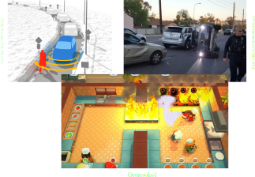Partial Communication through actions
Partial Communication through actions

-
Legible actions can be incredibly diagnostic.
Dragan, et al, "Legibility and predictability of robot motion." HRI `13. - Actions influence other agents.
Sadigh, et al. "Planning for autonomous cars that leverage effects on human actions." RSS `16. -
Essential for interpreting other signals: (Language, Disengagments, Other agents)
Goodman, et al. "Pragmatic language interpretation as probabilistic inference." TiCS `16
McPherson, et al. "Modeling supervisor safe sets for improving collaboration in human-robot teams." IROS `18
Afolabi, et al. "People as sensors: Imputing maps from human actions." IROS `18.

Can try to move up, down, left, right

May slip due to wind

What is the agent trying to do?

Probably avoiding red tiles

Probably trying to reach yellow tiles

Useful properties for an intent/goal formalism
- Support composition.
- Be semantically robust to changes in the dynamics.
- Support describing temporal tasks.
Start with an example to motivate the first two
- Support composition.
- Be semantically robust to changes in the dynamics.
- Support describing temporal tasks.
How to safely compose in a dynamics invariant way?
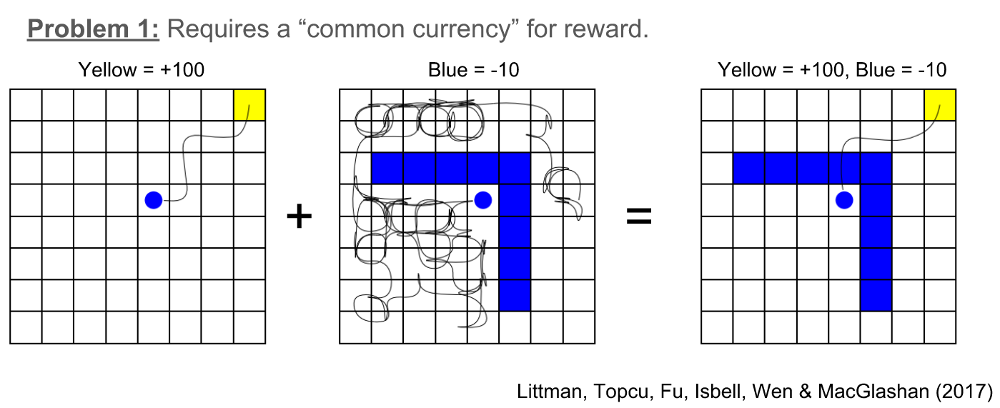Proposal: Formalize around Boolean specifications.
Will consider: Automata and Temporal Logic
Support boolean compositions
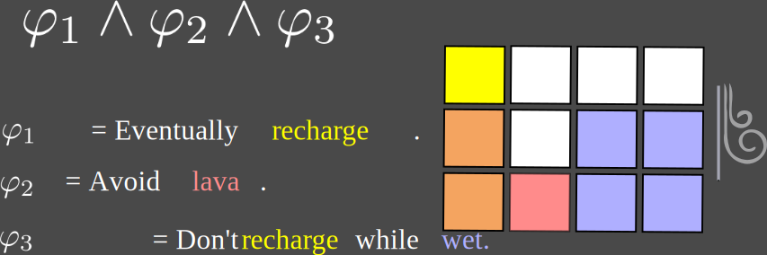Support incremental learning

Useful properties for an intent/goal formalism
- Support composition.
- Be semantically robust to changes in the dynamics.
- Support describing temporal tasks.
Dynamic States ≠ Reward States
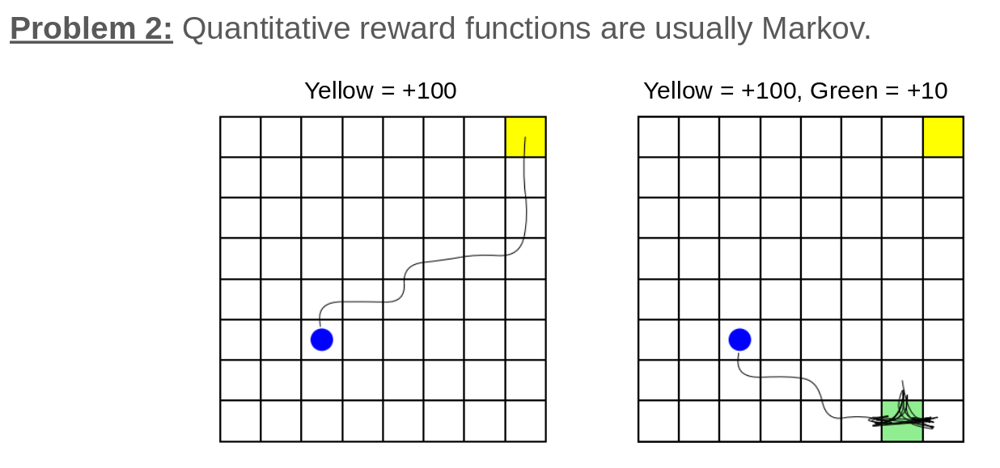Beware the curse of history (Pineau et al 2003).
Naïvely adding history results in exponential state space explosion!
How to infer what history is important?
Don't need "wet" to describe dynamics
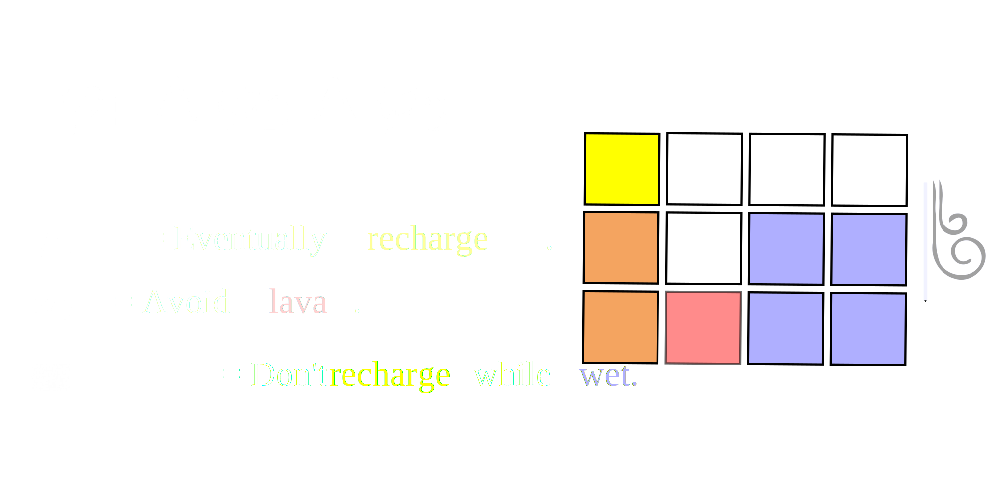Can learn as state machine over state colors
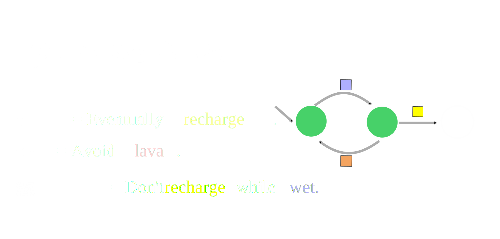Will explore inferring goals as Boolean specifications

- Support composition.
- Be semantically robust to changes in the dynamics.
- Support describing temporal tasks.
Structure of the talk
Specification motivated agents
From demonstrations to specifications
Likelihood Calculation in Symbolic MDPs
Conclusion and future work
Dynamics Model
-
Assume some fixed sets of states and actions.
 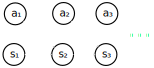
- A trace, $\xi$, is a sequence of states and actions.
- Assume all traces the same length, \(\tau \in \mathbb{N}\).
Trace properties
-
A (Boolean) specification,
$\varphi$, is a set of traces.

- We say $\xi$ satisfies $\varphi$, if $\xi \in \varphi$.
Trace properties derived from Formal Logic, Automata, etc
Will call a collection of trace properties a concept class.

No a-priori order on traces
Agent model induces ordering.
- Need to know what moves are "risky".
- Need to know agent's objective and competency.
Agent model induces ordering
-
A demonstration of a task
$\varphi$ is an unlabeled example where
the agent tries to satisfy $\varphi$.

- Agency is key. Need a notion of action.
- Success probabilities induce an ordering.


Frame as Inverse Reinforcement Learning
Given a series of demonstrations, what reward, $r(s)$, best explains the behavior? (Abbeel and Ng 2004)
No unique explanatory reward!
Maximize Causal Entropy
subject to feature statistics.
(Ziebart, et al. 2010)Focus on reward matching
Maximize Causal Entropy
subject to $E[r]$
What should the reward be?
Proposal: Use indicator.
\[E[r] = \Pr(\xi \in \varphi)\]
States are now traces
States are now traces
Suppose \(\varphi\) is over traces of length 2.
States are now traces
Suppose \(\varphi\) is over traces of length 2.
Maximum Causal Entropy Policy
Find $\lambda$ to match $p^*$.
Entropy regularized bellman backup
max ↦ log sum exp.
$\mathbb{E}[r(s_{1:t})] \mapsto \mathbb{E}[r(s_{1:t})] + H(a\mid s_{1:t})$ (Geist et al, ICML '19)
Entropy regularized bellman backup
max ↦ smooth max (smax).
Soft Bellman backup
Find $\lambda$ to match $p^*$.
Satisfaction probability grows monotonically in \(\lambda\).
Can binary search for \(\lambda\) such that satisfaction probability matches data.
Naïve computation quickly intractable
Naïve computation quickly intractable
Can do better if you include relevant memory...
$O(\text{horizon}\cdot|A \times S \times S_\varphi|)$ via dynamic programming...but can we do better?
Consider running example
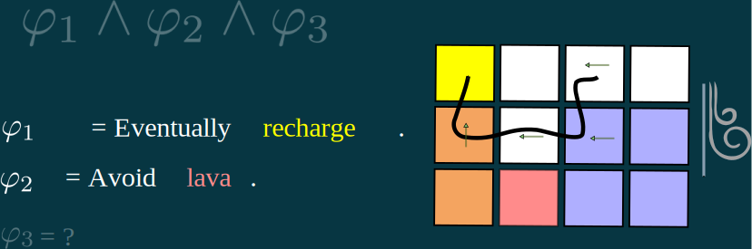Focus on choices along demonstration
Many ways to deviate from demonstration
Each deviation's subtree summarized by $V_\lambda, Q_\lambda$.
Reframe as conforming or deviating
$\mathbb{E}$ and $\text{smax}$ are associative
So we can summarize value of "pivoting" at a given node.
Two choices along a demonstration

Multiply along demonstration to get likelihood.
Focus on choices along demonstration
How to compute action values
- Dynamic Programming
- Dynamic Programming on compressed structure
- Monte Carlo Tree Search (e.g., Smooth Cruiser [1])
- Function Approximation (e.g., Soft Actor Critic [2])
Efficient PAC estimation
- Dynamic Programming
- Dynamic Programming on compressed structure
- Monte Carlo Tree Search (e.g., Smooth Cruiser [1])
- Function Approximation (e.g., Soft Actor Critic [2])
Good in practice. Mileage may vary
- Dynamic Programming
- Dynamic Programming on compressed structure
- Monte Carlo Tree Search (e.g., Smooth Cruiser [1])
- Function Approximation (e.g., Soft Actor Critic [2])
This talk will focus on speeding up *exact* calculation
- Dynamic Programming
- Dynamic Programming on compressed structure
- Monte Carlo Tree Search (e.g., Smooth Cruiser [1])
- Function Approximation (e.g., Soft Actor Critic [2])
Take as blackbox for now
- Dynamic Programming
- Dynamic Programming on compressed structure
- Monte Carlo Tree Search (e.g., Smooth Cruiser [1])
- Function Approximation (e.g., Soft Actor Critic [2])
Structure of the talk
Specification motivated agents
From demonstrations to specifications
Likelihood Calculation in Symbolic MDPs
Conclusion and future work

Demonstration Informed Specification Search
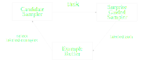Goal
Want to find specification that makes the demonstrations unsurprising.
View demonstration as a computation tree
Environment nodes average
Agent nodes softmax
Surprise factors through a function over pivot values.
How does changing the specification change the pivot value?
Each pivot's subtree summarized by V
Each path given binary label by specification
Flipping value monotonically changes subtree value
Can sample from $\pi$ to generate high weight paths.
Evidence that path is mis-labeled by candidate $\varphi$
- $|\nabla \widehat{h}|$ determines weight of evidence.
- Old label given by $\nabla_i \widehat{h} > 0$.
- New label given by $\nabla_i \widehat{h} < 0$.
Surprise Guided Sampler
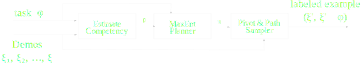Can be seen as walk through labeled example space
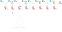
Fix algorithm mapping examples to a concept

Does not need to be one-to-one

Demonstration Informed Specification Search
Illustrate on our running example
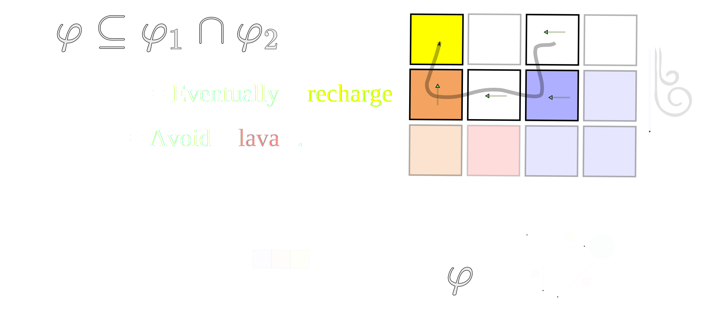Find minimal DFA given constraints and demonstration
Start with no labeled examples
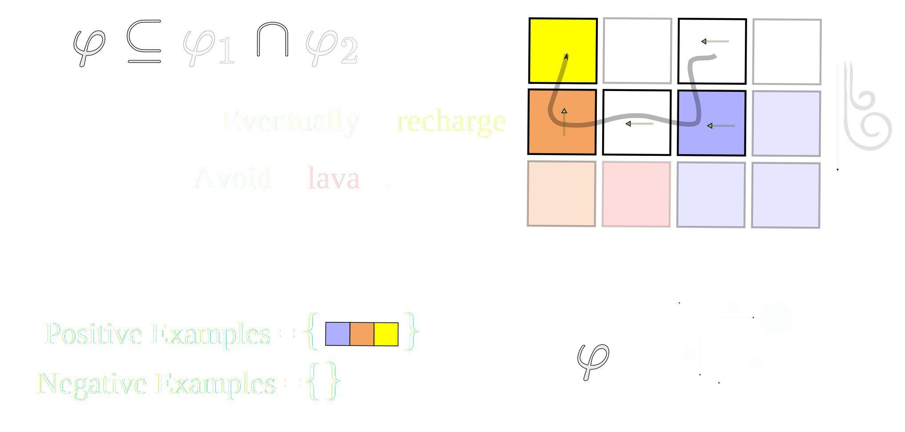Synthesize minimal DFA
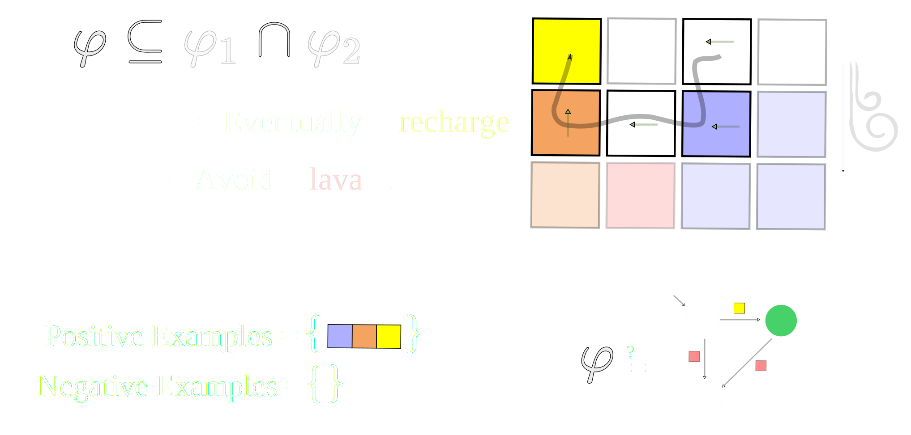Initially "trivial"
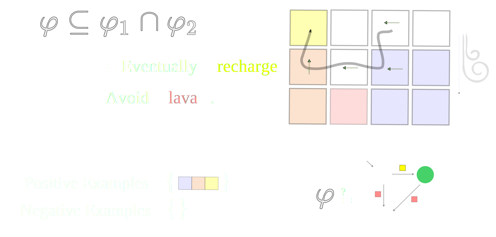Calculate gradient using p=0.8
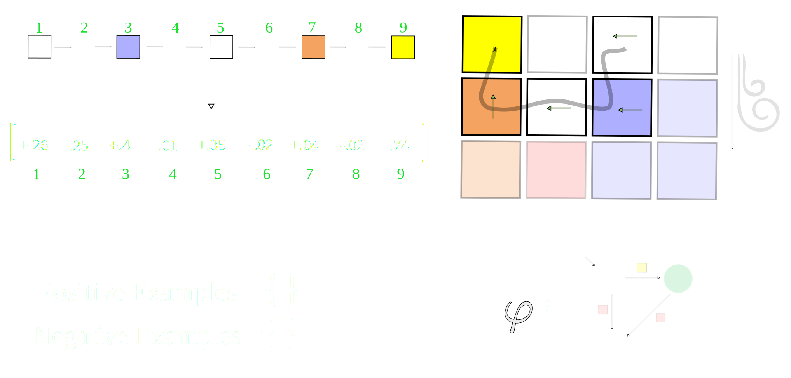Pivoting at 9 most likely, but... can't relabel
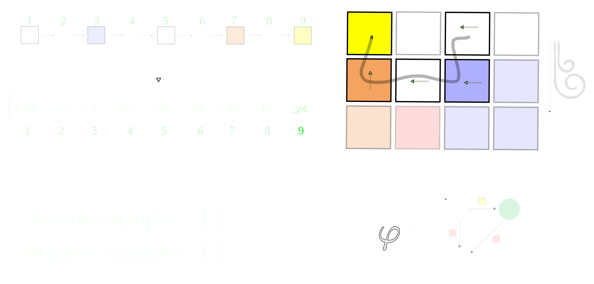
Can pivot at 3
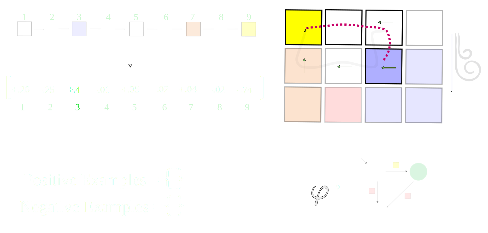Add to negative example set to adjust V
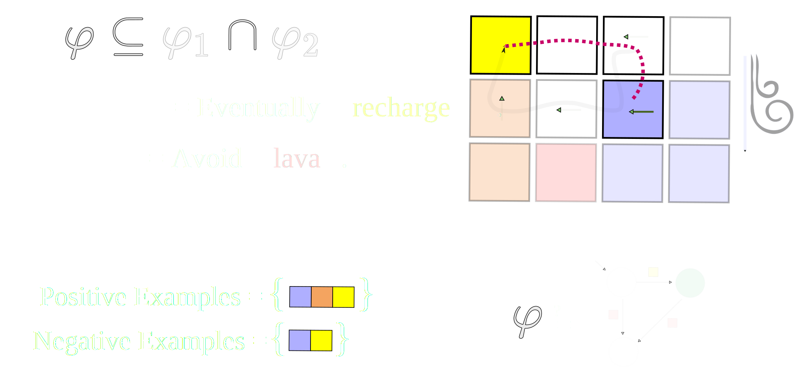Synthesize minimal DFA
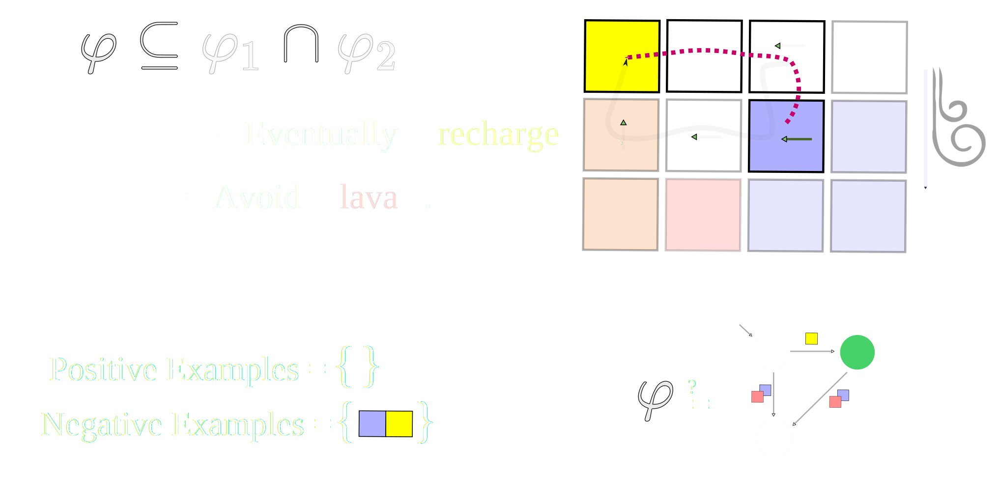Calculate gradient using p=0.8
Pivoting at 9 most likely, and can sample
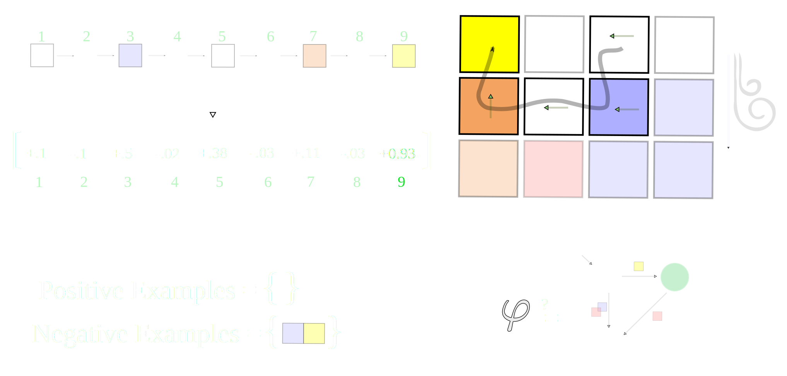Mark demonstration as positive example
Don't recharge while wet
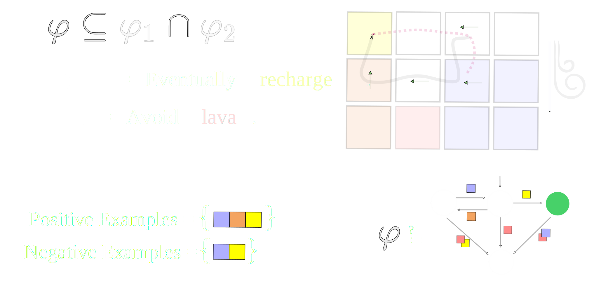Lifted in simulated annealing using example buffer
Structure of the talk
Specification motivated agents
From demonstrations to specifications
Likelihood Calculation in Symbolic MDPs
Conclusion and future work
Backup as computation graph
Problem: Unrolled tree grows exponentially in horizon!
Backup as computation graph
Observation 1: A lot of shared structure in computation graph.
Observation 2: System and environment actions are ordered.
Circuit model
Represent Markov Decision Process as deterministic transition system with access to $n_c$ (biased) coin flips.
Guaranteed to exist for finite horizon, actions, and transition support.
Unrolling and composing with specification results in a predicate
Backup as computation graph
Idea: Encode graph as a binary predicate \[ \psi: \{0, 1\}^n \to \{0,1\} \] and represent as Reduced Ordered Binary Decision Diagram (Bryant 1986).
Random Bit Model
Proposal: Represent \(\psi\) as Binary Decision Diagram with bits in causal order.
Reduced Causally Ordered Binary Decisian Diagram
How to compute values on causally ordered BDDs?
- Associativity of \(\text{smax}\) and \(\mathbb{E}\).
- \(\text{smax}(\alpha, \alpha) = \alpha + \ln(2)\)
- \(\text{E}(\alpha, \alpha) = \alpha\)
Re-interpret as computation graph
- Associativity of \(\text{smax}\) and \(\mathbb{E}\).
- \(\text{smax}(\alpha, \alpha) = \alpha + \ln(2)\)
- \(\text{E}(\alpha, \alpha) = \alpha\)
How big can these Causal BDDs be?
Linear in horizon!
Note: Using function composition, can build BDD efficiently.
Works for Markov Chains and Stochastic Games too!
- Markov Chains: Sebastian Junges, Steven Holtzen, Marcell Vazquez-Chanlatte, Todd Millstein, Guy Van den Broerk, Sanjit A. Seshia. "Model Checking Finite-Horizon Markov Chains with Probabilistic Inference", CAV `21.
- Stochastic Games: Marcell Vazquez-Chanlatte, Sebastian, Daniel J. Fremont, Sanjit A. Seshia. "Entropy Guided Control Improvisation", RSS `21
Outperforms Probablistic Model Checker on some benchmarks
- Markov Chains: Junges, Sebastian, Steven Holtzen, Marcell Vazquez-Chanlatte, Todd Millstein, Guy Van den Broerk, Sanjit A. Seshia. "Model Checking Finite-Horizon Markov Chains with Probabilistic Inference", CAV `21.
- Stochastic Games: Vazquez-Chanlatte, Marcell, Junges, Sebastian, Daniel J. Fremont, Sanjit A. Seshia. "Entropy Guided Control Improvisation", RSS `21
Max Causal entropy control under uncertain dynamics
- Markov Chains: Junges, Sebastian, Steven Holtzen, Marcell Vazquez-Chanlatte, Todd Millstein, Guy Van den Broerk, Sanjit A. Seshia. "Model Checking Finite-Horizon Markov Chains with Probabilistic Inference", CAV `21.
- Stochastic Games: Vazquez-Chanlatte, Marcell, Junges, Sebastian, Daniel J. Fremont, Sanjit A. Seshia. "Entropy Guided Control Improvisation", RSS `21
Example: Drone test harness
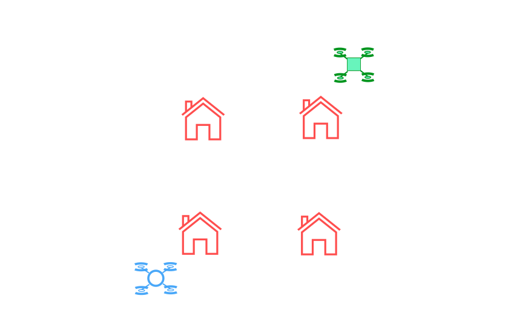Want to certify green delivery drone
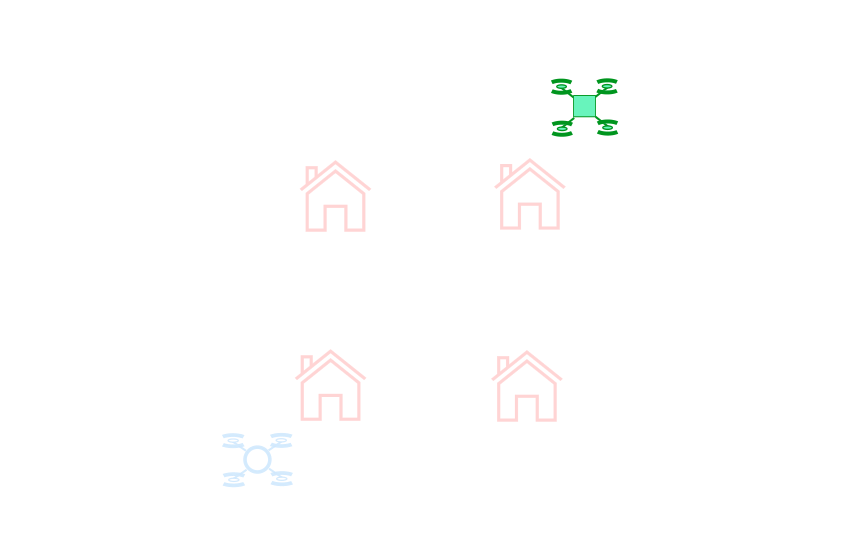Will ask the drone to deliver packages
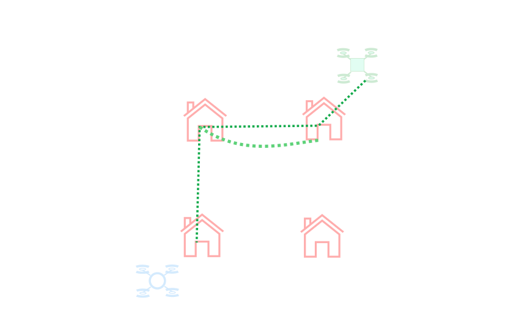Run the drone a few times to get dynamics estimate
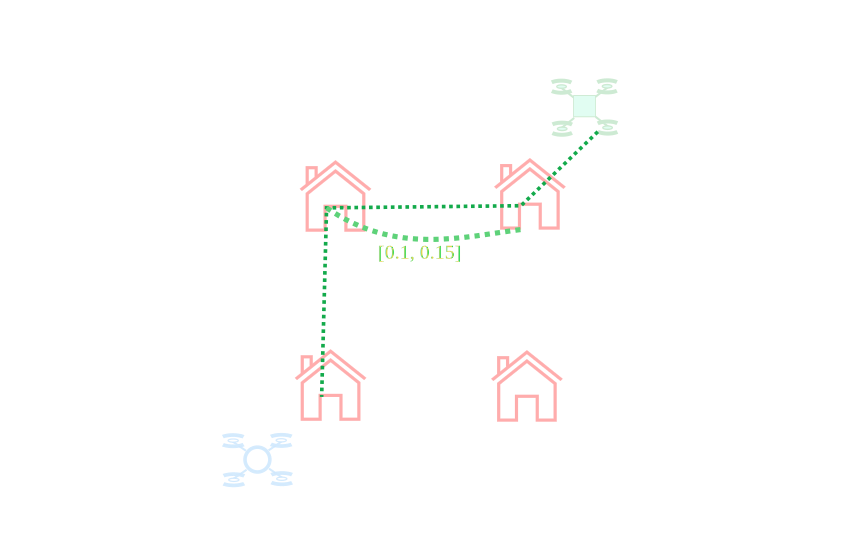Want to test green drone in presence of (certified) blue drone
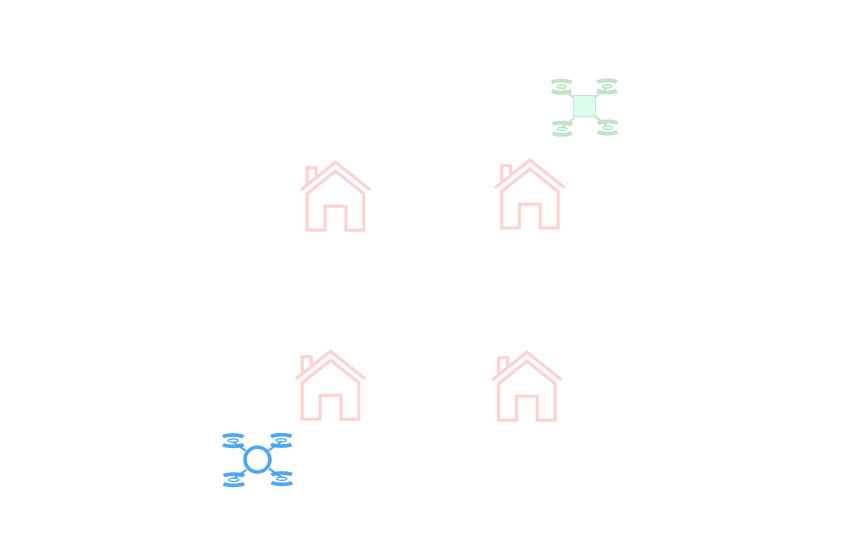Synthesize maximally random improviser for blue drone
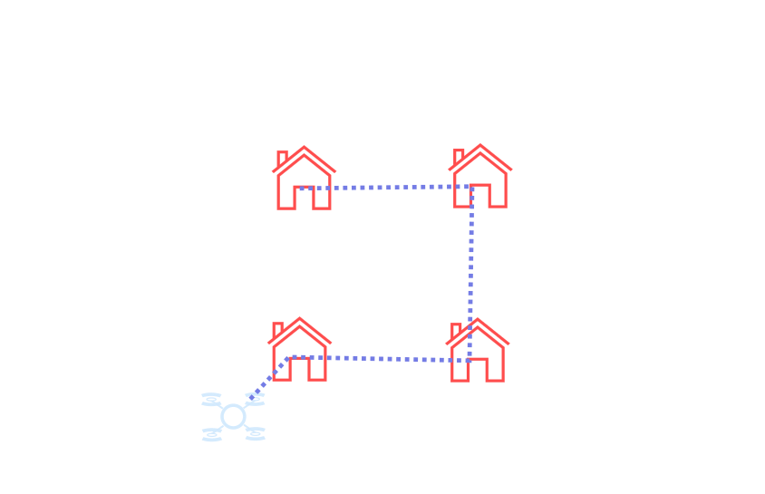Structure of the talk
Specification motivated agents
From demonstrations to specifications
Likelihood Calculation in Symbolic MDPs
Conclusion and future work
In this talk
- Max (causal) entropy forecasting of specification driven agents in MDPs and Stochastic Games
"Learning Task Specifications from Demonstrations." NeurIPS `18.
"Maximum Causal Entropy Specification Inference from Demonstrations." CAV `20
"Entropy Guided Control Improvisation", RSS `21 - Value calculuation on symbolic Marko Chains, MDPs and Stochastic Games
"A Model Counter's Guide to Probabilistic Systems.". (preprint)
"Model Checking Finite-Horizon Markov Chains with Probabilistic Inference", CAV `21
"Maximum Causal Entropy Specification Inference from Demonstrations." CAV `20
"Entropy Guided Control Improvisation", RSS `21 -
Searching for likely specifications given demonstrations
"Learning Task Specifications from Demonstrations." NeurIPS `18.
"Demonstration Informed Specification Search." In progress.
By no means solved
Clear path to scaling up
- Need a way to estimate values.
- Need a way to sample likely paths from policy.
Plays nicely with approximate methods
- Dynamic Programming
- Dynamic Programming on compressed structure
- Monte Carlo Tree Search (e.g., Smooth Cruiser [1])
- Function Approximation (e.g., Soft Actor Critic [2])
Natural path for combining symbolic and MCTS methods
- Dynamic Programming
- Dynamic Programming on compressed structure
- Monte Carlo Tree Search (e.g., Smooth Cruiser [1])
- Function Approximation (e.g., Soft Actor Critic [2])
Multi-agent (inferred) assume guarantee reasoning underexplored
\[ A \implies G\]
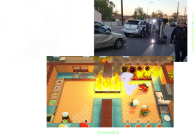
Maximum causal entropy correlated equillibria
seem like an interesting model
Ziebart, et al., "Maximum causal entropy correlated equilibria for Markov games." AAAI `10.
Questions?